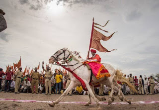
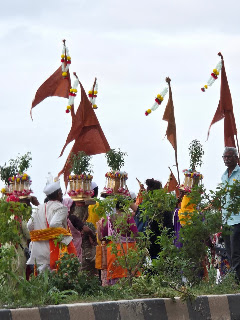
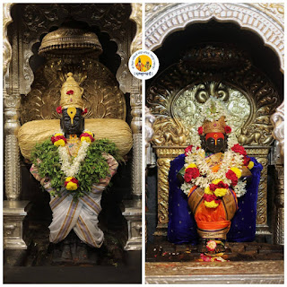
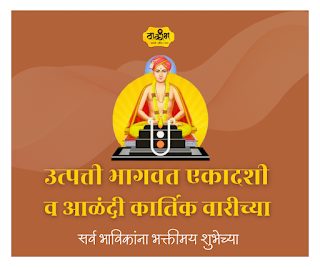

वाकीभ संपादकीय मंडळ
संत साहित्याची परंपरा हस्तलिखिते, मुद्रित ग्रंथ आणि मौखिक परंपरांतून जपली गेली आहे.
आजच्या डिजिटल युगात हे साहित्य सुगम, शोधण्यास सुलभ आणि पुढील पिढ्यांसाठी टिकाऊ स्वरूपात उपलब्ध करणे
ही काळाची गरज आहे. योग्य लिपी, स्वच्छ मांडणी आणि मुक्त प्रवेश यांमुळे अभ्यासक, तरुण वाचक आणि
भाविक यांना एकाच ठिकाणी विश्वसनीय आध्यात्मिक सामग्री मिळू शकते.
Vaakib - वाकीभ
एक वारकरी म्हणून, वारी काळात पालखी मार्गावर मद्यविक्री आणि मांसविक्री असावी का नाही, यावरची आपली भूमिका अत्यंत स्पष्ट आणि ठाम असली पाहिजे. वारकरी म्हणून आपली भूमिका: वारी काळात पालखी मार्गावर मद्य आणि मांसाची विक्री अजिब...
वाकीभ संपादकीय मंडळ
संतांच्या अभंगांमध्ये जीवनातील संघर्ष, भक्तीतील समर्पण आणि आत्मबोधाचा नितळ अनुभव एकत्र भेटतो.
नियमित अभंग वाचनामुळे शब्दांपलीकडील आशय हळूहळू अंतर्मनात उतरतो. त्यामुळे मनाची घालमेल कमी होते,
विचारांना दिशा मिळते आणि भक्ती ही भावनिक नव्हे तर जागरूक जीवनपद्धती म्हणून उभी राहते.

Vaakib - वाकीभ
।। जय हरी माऊली ।। वारी म्हणजे केवळ चालणे नाही, ती एक अनुभूती आहे. या अनुभूतीचे अनेक अविस्मरणीय टप्पे आहेत, पण त्यातील एक क्षण असा आहे, जो पाहताना श्वास रोखला जातो, अंगावर रोमांच उभे राहतात आणि डोळ्यांत नकळत अश्रू तरळतात...
वाकीभ संपादकीय मंडळ
नामस्मरण ही केवळ जपाची पद्धत नसून ती मन, वाणी आणि आचरण यांना एकसंध करणारी साधना आहे.
वारकरी परंपरेत विठ्ठलनाम घेताना भक्त अंतर्मनातील चंचलता शांत करतो आणि दैनंदिन जीवनात करुणा,
समता आणि सेवाभाव वाढवतो. म्हणूनच नाम हे साधकाला मार्गदर्शन करणारे, सांत्वन करणारे आणि
सतत जागृत ठेवणारे आध्यात्मिक अधिष्ठान मानले जाते.

Vaakib - वाकीभ
टाळ, मृदंग आणि तंत्रज्ञान: आधुनिक युगातील वारकरी परंपरा वारकरी संप्रदाय, महाराष्ट्राची एक अनोखी आणि समृद्ध आध्यात्मिक परंपरा, हजारो वर्षांपासून भक्तीचा आणि समतेचा संदेश देत आहे. पंढरपूरच्या विठोबाच्या भेटीसाठी दरवर्षी नि...

Vaakib - वाकीभ
आषाढी वारीचा "पलंग निघाला" म्हणजे देवाचे (विठ्ठलाचे) सर्व राजोपचार बंद करून, अधिकाधिक भाविकांना २४ तास दर्शन मिळावे यासाठी देवाचा पलंग उचलला जातो. यालाच देवाचा पलंग निघणे असे म्हणतात. पूर्वी हा उपचार आषाढ शुद्ध पंचमीला ह...
Vaakib - वाकीभ
।। जय हरी माऊली ।। 'वाकीभ' - हे केवळ एक नाव नाही, तर हा एक विचार आहे, एक भावना आहे आणि संत साहित्याच्या अथांग सागरात डुंबण्याची एक प्रामाणिक इच्छा आहे. आज, आमच्या या नवीन ब्लॉगच्या माध्यमातून, आम्ही आमच्या या प्रवासाची आ...
Vaakib - वाकीभ
पंढरीहूनि गावा जाता । खंती वाटे पंढरीनाथा ।। आता बोळवीत यावे । आमुच्या गावा आम्हांसवें ।। सदगदित कंठ । फुटो पाहे हृदय ।। निळा म्हणे पंढरीनाथा । चला गावा आमुच्या आता ।। पौर्णिमेला पालख्या गोपाळपूर येथे जाउन काला करतात. का...

Vaakib - वाकीभ
संत ज्ञानेश्वर आणि मुक्ताई हे वारकरी संप्रदायातील दोन महान संत. या दोघांमधील संवाद म्हणजे आध्यात्मिक ज्ञान आणि भक्तीचा अनुपम संगम. त्यांचे बोलणे हे केवळ शब्द नसून, ते अनुभवाचे आणि तत्त्वज्ञानाचे सार होते. एकदा संत ज्ञाने...

Vaakib - वाकीभ
तुकाराममय_विष्णु... चित्रपटसृष्टीतील पहिला चित्रपट म्हणून 'राजा हरिश्चंद्र' या चित्रपटाचे नाव घेतले जाते. परंतु त्या अगोदरच 'संत तुकाराम' या चित्रपटाची निर्मिती झाली होती. दुर्दैवाने त्याची प्रिंट जळाल्यामुळे तो कुठे प्र...

Vaakib - वाकीभ
हरिपाठ: एक सूत्र ग्रंथ हरिपाठ हा कमी शब्दांमध्ये गहन अर्थ व्यक्त करणारा ग्रंथ आहे, जो ज्यांना तत्त्वज्ञान थोडक्यात समजतं अशा लोकांसाठी आहे. या सूत्रांमध्ये आलेली गेयता कधीकधी अर्थाला आणि मनाला भटकवू शकते, त्यामुळे त्याच्...

Vaakib - वाकीभ
पाशांकुशा एकादशीची व्रतकथा पुराणात आढळून येते. प्राचीन काळात क्रोधन नामक एक क्रूर पारधी विंध्य पर्वतावर राहत असे. त्यांनी आपले संपूर्ण जीवन हिंसा, मद्यपान, लोकांना लुटणे, फसवणे, कपट करणे यांसारखी वाईट, चुकीची कामे करण्या...

Vaakib - वाकीभ
मोक्षदा एकादशी हे व्रत हिंदू धर्मात अत्यंत महत्त्वाचे आणि शुभ मानले जाते. 'मोक्षदा' नावाचा अर्थच 'मोक्ष देणारी' असा आहे. हे व्रत मार्गशीर्ष (मार्गशीर्ष) महिन्याच्या शुक्ल पक्षातील एकादशीला केले जाते. या व्रताचे प्रमुख मह...

Vaakib - वाकीभ
उत्पत्ती एकादशी (उत्पन्ना एकादशी) ही अत्यंत पवित्र व्रतांपैकी एक आहे. धर्मशास्त्रानुसार या दिवशी एकादशी देवीची उत्पत्ती झाली म्हणून याला “उत्पत्ती/उत्पन्ना एकादशी” असे नाव आहे. चला, कथा आणि फलित सविस्तर पाहू उत्पत्ती ए...

Vaakib - वाकीभ
भगवान दत्तात्रेयांना 'अवधूत' (ज्याने सर्व बंधने तोडली आहेत) असे म्हटले जाते. त्यांनी आपल्या ज्ञानाच्या शोधात सृष्टीतील विविध तत्त्वांचे निरीक्षण केले आणि २४ गुरु (शिक्षक) निवडले, ज्यांना 'चतुर्विंशति गुरू' म्हणून ओळखले...

Vaakib - वाकीभ
महाराष्ट्राच्या संत परंपरेत, संत तुकाराम महाराजांचे कार्य अविस्मरणीय आहे. या कार्याला बळ देणारे आणि ते पुढील पिढ्यांपर्यंत पोहोचवणारे एक महत्त्वाचे नाव म्हणजे श्री संत संताजी जगनाडे महाराज . संताजी महाराज हे केवळ तुकोब...

Vaakib - वाकीभ
सफला एकादशी चे हिंदू धर्मात खूप मोठे महत्त्व आहे आणि ती पौष महिन्याच्या कृष्ण पक्षातील एकादशीला येते. 'सफला' या शब्दाचा अर्थ 'यशस्वी' किंवा 'फलदायी' असा होतो, म्हणून या एकादशीला व्रत केल्याने सर्व कार्ये सफल होतात आणि...

Vaakib - वाकीभ
इरावती कर्वे (१९०५ - १९७०) या केवळ एक लेखिकाच नव्हत्या, तर त्या भारतातील पहिल्या महिला मानववंशशास्त्रज्ञ (Anthropologist) , शिक्षणतज्ज्ञ आणि अत्यंत विचक्षण बुद्धिमत्तेच्या समाजशास्त्रज्ञ होत्या. विज्ञान आणि साहित्य यां...

Vaakib - वाकीभ
महाराष्ट्राची भूमी संत-परंपरेने आणि भक्ती-विचारांनी पावन झाली आहे. या भूमीतील दोन प्रमुख आणि महत्त्वाचे आध्यात्मिक प्रवाह म्हणजे वारकरी संप्रदाय (विठ्ठल भक्ती) आणि दत्त संप्रदाय (गुरु भक्ती). अनेकदा हे संप्रदाय वेगवेगळ...

Vaakib - वाकीभ
संत नामदेव महाराजांनी आपल्या अभंगांतून एकादशीच्या व्रताचे आध्यात्मिक आणि व्यावहारिक महत्त्व अत्यंत प्रभावीपणे सांगितले आहे. वारकरी संप्रदायात एकादशीला 'व्रतांचा राजा' मानले जाते. नामदेव महाराजांच्या शिकवणीनुसार एकादशी...

Vaakib - वाकीभ
गुढीपाडवा म्हणजे केवळ हिंदू नववर्षाची सुरुवातच नाही, तर महाराष्ट्राच्या मातीत रुजलेल्या 'वारकरी संप्रदाया'साठी हा दिवस आध्यात्मिक विजयाचा आणि नवीन संकल्पाचा प्रतीक आहे. वारकरी संतांनी गुढीला केवळ बांबू आणि रेशमी वस्त्र...

Vaakib - वाकीभ
महाराष्ट्राच्या संत परंपरेतील प्रज्ञा, वात्सल्य आणि क्रांतीचे मूर्त रूप म्हणजे मुक्ताबाई. 'लहानपण दे गा देवा' असे म्हणणाऱ्या जगात, लहान वयातच ज्ञानेश्वर माउलींसारख्या विश्ववंद्य गुरूची 'गुरू' होण्याचे सामर्थ्य केवळ मुक...

Vaakib - वाकीभ
अपरा एकादशीनिमित्त वारकरी संतांच्या विचारांचा सार… • नामस्मरणाचे महत्त्व संतांच्या मते, एकादशी हे केवळ अन्नाचा त्याग करण्याचे साधन नसून ते मनाला भगवंताच्या नामात स्थिर करण्याचे व्रत आहे. अपरा एकादशी ही अपार पुण्य देणार...

Vaakib - वाकीभ
पौराणिक कथेनुसार, जेव्हा इतर सर्व महिन्यांचे कोणीतरी दैवत होते, तेव्हा अधिक मासाला कोणतेही दैवत नव्हते आणि त्याला 'मलमास' म्हणून हिणवले जात होते. तो जेव्हा भगवान विष्णूंकडे गेला, तेव्हा विष्णूंनी त्याला आपले स्वतःचे श्...

Vaakib - वाकीभ
हिंदू धर्मशास्त्रात एकादशीच्या व्रताला अत्यंत पवित्र आणि महत्त्वाचे स्थान आहे. साधारणपणे वर्षातून २४ एकादशी येतात, परंतु जेव्हा 'अधिक मास' (धोंड्याचा महिना) येतो, तेव्हा त्या वर्षात दोन अतिरिक्त एकादशी जोडल्या जातात. य...

Vaakib - वाकीभ
संत चोखामेळा महाराज यांच्या पुण्यतिथीनिमित्त त्यांच्या कार्याचा आणि भक्तीचा गौरव करणारा हा एक छोटा लेख समता आणि शुद्ध भक्तीचा अखंड झरा भारतीय आध्यात्मिक परंपरेत आणि वारकरी संप्रदायात संत चोखामेळा यांचे स्थान अढळ आहे. "...
Vaakib - वाकीभ
वाकीभ म्हणजे काय ? जय हरी माऊली ! आपण आज पासून आपल्या सोशल मीडिया परिवारात पदार्पण करत आहोत हा आपला अल्प परिचय वा - वारकरी संत परंपरेचा पाईक जो ज्ञानाच्या आणि भक्तीच्या मार्गावर चालतो की - कीर्तन संत साहित्याचे श्रवण मनन...